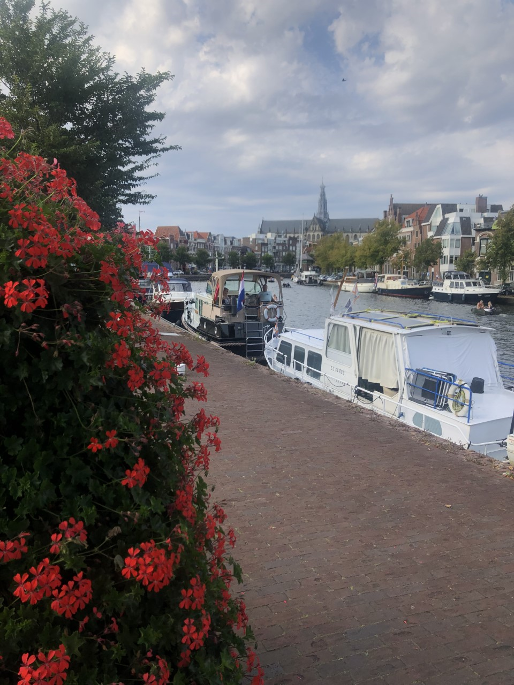
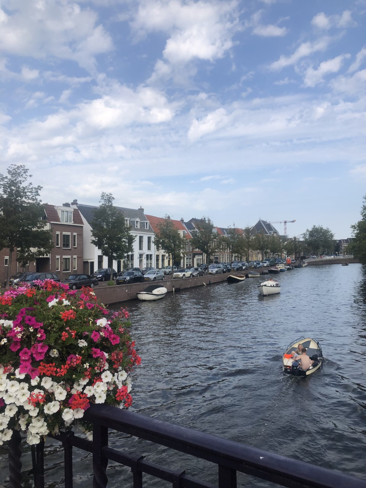

We use cookies on this website. By using this website, we'll assume you consent to the cookies we set.
...A historically beautiful and bustling city, offers the warmth of a small town and quick access to nearby Amsterdam. Given its reputation as a market town for centuries, Haarlem is easily identified as a major shopping center in The Netherlands and provides tourists with a diverse variety of exciting attractions and shops. Big retail chains in the main street are alternated by cozy, funny and picturesque shops in the small streets around it. The city center is conveniently within walking distance from the majority of attractions in the area, providing easy means of transport to popular sites, and scenic walks on the way!
Offering visitors a lively cultural scene, this popular Dutch city has a wonderful atmosphere, excellent shopping and dining, and many picturesque tourist sites! Haarlem’s indubitable charm is discovered by an increasing amount of visitors each year, as it is home to an expansive and flavorful culture!
